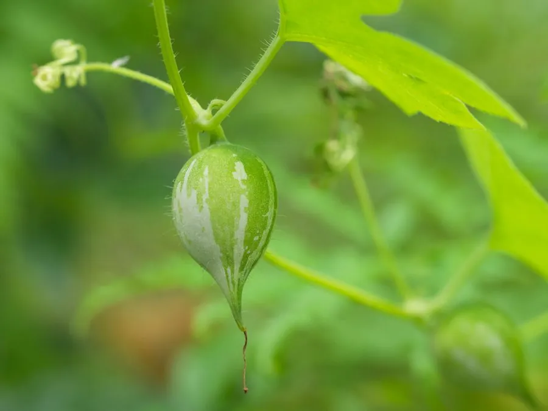

农作物与经济植物 · 植物界
蛇瓜 Trichosanthes cucumerina

葫芦科一年生攀援草本，果实细长扭曲如蛇、可达两米，嫩果可炒食，原产南亚，是夏季特色瓜菜之一。
- 分类
- 门被子植物门纲木兰纲目葫芦目科葫芦科属栝楼属
- 栖息环境
- 热带、亚热带菜园与棚架，喜高温、向阳、肥沃土壤
- 地理分布
- 原产印度与东南亚，中国南方、南亚与东南亚广泛栽培
- 保护级别
- 暂无评估；栽培作物
物种志
蛇瓜为葫芦科栝楼属一年生攀援草本，茎细长，卷须分叉，攀援力强。叶掌状分裂，边缘有齿。花单性，雌雄同株，花冠白色，边缘丝状流苏，傍晚开放，次日凋萎。果实细长圆柱形，长 1–2 米，常扭曲如蛇，幼果绿色带白色条纹，成熟后转橙红，果肉海绵状；种子扁椭圆形。
蛇瓜原产印度与东南亚，中国南方有栽培。嫩果可切片炒食、做汤，口感近似丝瓜但略带清苦，需煮透；成熟果实不可食，但老熟后的纤维可作洗刷用具。栽培喜高温、阳光充足与肥沃土壤，需搭高架供其垂挂，生长期 3–4 个月，果实趁嫩采收，过老则纤维化。它的花在傍晚开放，白色流苏状花冠颇具观赏性，也常被种在棚架上作绿荫。
形态与习性
- 原产地印度与东南亚
- 果长1–2 米，细长扭曲如蛇
- 花果期夏季开花，花白色流苏状，傍晚开放
- 用途嫩果炒食做汤，老熟纤维可作洗刷用
- 栽培喜高温向阳，需搭高架垂挂
- 采收果长 30–50 厘米时趁嫩采收
趣味知识
- 蛇瓜的果实可以长到两米，垂在棚架下像一条条绿色的蛇。
- 它的花冠边缘呈丝状流苏，傍晚开放、次日凋萎，靠夜行蛾类传粉。
- 嫩果炒食口感像丝瓜，但带轻微苦味，需煮熟后食用。
- 老熟果实的纤维网络干燥后，在南亚被当作天然洗碗布使用。